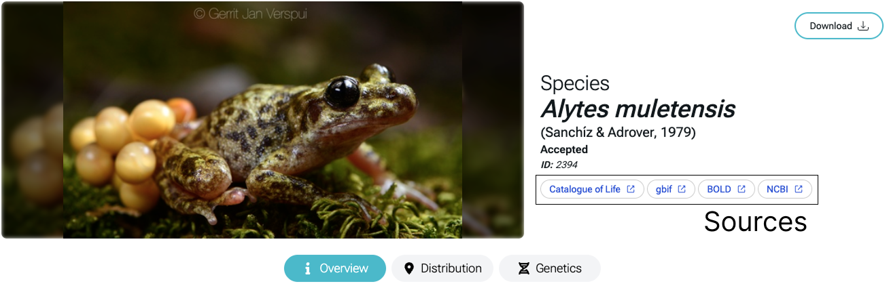

Taxon overview
Taxonomy and taxon overview
One of the main objective of Balearica is to compile the most comprehensive checklist of Eukatiotes taxa inhabiting the Balearic ecosystems. To achieve this, we aggregate data on a wide range of taxa from sources, including Bioatles, GBIF 1, scientific literature, and several public databases that document species occurrences in the region. As with any large-scale biodiversity database, this project is continuously evolving. We are actively reviewing the taxon nomenclature and incorporating newly recorded species. However, given the vast scope of this platform, some taxa may still be missing. If you identify any gaps or inconsistencies, we encourage you to contact us, so we can address and improve the dataset accordingly.
Taxonomy review
The nomenclature of each taxon has been cross-referenced with the Catalogue of Life 2 database to ensure a high level of standardization across the platform. In cases where a taxon is not listed in the Catalogue of Life, we retrieve the information from other authoritative sources to maintain consistency and accuracy. These sources are displayed beneath each taxon name on the Overview page for transparency (Figure 1).
Warning
The taxon nomenclature has been cross-referenced with Catalogue of Life Release 9923 (2023-08-17). New releases may update taxon IDs, so if a link to the Catalogue of Life is broken, please contact us so we can resolve the issue. We are also working on a new pipeline to regularly update taxon IDs to improve service quality.

Taxonomy levels
Limited to the domain of Eukaryote, taxonomy in Balearica includes 10 taxonomic levels: Life, Kingdom, Phylum, Class, Order, Family, Genus, Species, Subspecies, and Variety.
These levels were deliberately chosen to maintain a balance between broad categorization and avoiding complexities related to detailed nomenclature. It is important to note that this platform was not specifically designed for taxonomic classification and is not a specialized tool created by or exclusively for taxonomists. Its primary purpose is to support biodiversity management, conservation efforts, and the identification of biodiversity knowledge gaps. Therefore, for users seeking more detailed taxonomic classifications, we recommend supplementing our data with information from other authoritative databases, such as the Catalogue of Life or other publicly available taxonomic resources.
Degree of establishment & Conservation status
Degree of establishment
As defined by the Darwin Core framework 3 , the "degreeOfEstablishment" refers to the extent to which an organism survives, reproduces, and expands its range in a given location and timeframe 4 . It reflects how well a species is established in a particular environment, based on its ability to persist and spread. For our purposes, we utilized the terms proposed by the Darwin Core, along with additional terms deemed relevant for our scope.
We also define who provides the information on the degree of establishment. This information can be supplied by a taxonomic expert, obtained from scientific articles or specific databases. In Figure 2, we present an example of the degree of establishment provided by an expert (i.e., Tommaso Cancellario).
Degree of establishment
Categories of Degree of Establishment and their definitions:
- Unknown: The establishment status of the organism is uncertain or unrecorded.
- Doubtful: The organism is suspected to have minimal survival or reproductive success in the area.
- Absent: The organism is not present in the location, or it has failed to establish.
- Endemic: The organism is native and restricted to a specific geographic area.
- Native: Not transported beyond limits of native range.
- Captive: Individuals in captivity or quarantine (i.e. individuals provided with conditions suitable for them, but explicit measures of containment are in place).
- Cultivated: Individuals in cultivation (i.e. individuals provided with conditions suitable for them, but explicit measures to prevent dispersal are limited at best).
- Released: Individuals directly released into novel environment.
- Failing: Individuals released outside of captivity or cultivation in a location, but incapable of surviving for a significant period.
- Casual: Individuals surviving outside of captivity or cultivation in a location, no reproduction.
- Reproducing: Individuals surviving outside of captivity or cultivation in a location, reproduction is occurring, but population not self-sustaining.
- Established: Individuals surviving outside of captivity or cultivation in a location, reproduction occurring, and population self-sustaining.
- Colonising: Self-sustaining population outside of captivity or cultivation, with individuals surviving a significant distance from the original point of introduction.
- Invasive: Self-sustaining population outside of captivity or cultivation, with individuals surviving and reproducing a significant distance from the original point of introduction.
- Widespread Invasive: Fully invasive species, with individuals dispersing, surviving and reproducing at multiple sites across a greater or lesser spectrum of habitats and extent of occurrence.
Conservation status
In Balearica, the IUCN Red List Categories are provided for species listed as threatened. This information is provided exclusively at the species level. To date, there are three levels of "Scope of Assessment": Global, Europe, and Mediterranean. This information indicates whether the evaluation applies to the global population or represents a regional assessment, focusing only on a specific part of the species' global distribution 5 .
A summarized explanation of the Red List categories is provided below. For full details, please refer to "IUCN Red List categories and criteria" 6 .
Conservation status
IUCN Red List Categories:
- Not Evaluated (NE): When a taxon has not yet been evaluated against the criteria.
- Data Deficient (DD): When there is inadequate information to make a direct, or indirect, assessment of the risk of extinction based on taxon distribution and/or population status.
- Least Concern (LC): When a taxon has been evaluated against the criteria and does not qualify for Critically Endangered, Endangered, Vulnerable or Near Threatened.
- Near Threatened (NT): When a taxon has been evaluated against the criteria but does not qualify for Critically Endangered, Endangered or Vulnerable now, but is close to qualifying for or is likely to qualify for a threatened category in the near future.
- Vulnerable (VU): When the best available evidence indicates that a taxon meets any of the criteria A to E for Vulnerable, and it is therefore considered to be facing a high risk of extinction in the wild.
- Endangered (EN): When the best available evidence indicates that a taxon meets any of the criteria A to E for Endangered, and it is therefore considered to be facing a very high risk of extinction in the wild.
- Critically Endangered (CR): When the best available evidence indicates that a taxon meets any of the criteria A to E for Critically Endangered, and it is therefore considered to be facing an extremely high risk of extinction in the wild.
- Extinct in the Wild (EW): When a taxon is known only to survive in cultivation, in captivity or as a naturalized population/s well outside the past range.
- Extinct (EX): When there is no reasonable doubt that the last individual of a taxon has died.
- Conservation Dependent (CD): When a taxon is dependent on conservation efforts to prevent it from becoming endangered.
- Not Applicable (NA): A taxa that occur in the region but have been excluded from the regional Red List for a specific reason.
Systems
Similar to the IUCN Red List, Balearica provides information on the "system" in which a species occurs. In this context, "system" refers to the broad ecological environment or habitat where a species primarily lives. We have chosen to use the same terminology as the IUCN Red List to ensure better standardization.
Systems
Systems:
- Terrestrial: Species that primarily inhabit land-based ecosystems (e.g., forests, grasslands, deserts).
- Freshwater: Species that depend on freshwater habitats like rivers, lakes, and wetlands.
- Marine: Species that inhabit saltwater environments, including oceans, coral reefs, and coastal areas.
Habitats
Similar to the IUCN Red List, Balearica provides information on the habitats in which a species occurs. To ensure better standardization, the same terminology as the IUCN Red List has been adopted. The habitat information reflects the species' overall ecological preferences, meaning some species may include habitats that are not present in the Balearic environment (i.e., Upupa epops).
Habitats
Habitats:
- Forest: Areas dominated by trees, including tropical, temperate, and boreal forests.
- Savanna: Grasslands with scattered trees, typically found in tropical and subtropical regions.
- Shrubland: Areas covered by shrubs and small trees, often in dry or semi-arid climates.
- Grassland: Open landscapes dominated by grasses, with few or no trees.
- Wetlands (inland): Areas with standing or flowing freshwater, such as swamps, marshes, and bogs.
- Rocky areas: Habitats with exposed rock, such as cliffs, mountains, and rocky outcrops.
- Caves & subterranean habitats (non-aquatic): Underground environments, including dry caves and tunnels.
- Desert: Dry, arid regions with sparse vegetation and extreme temperature variations.
- Marine neritic: Shallow coastal waters, including coral reefs and continental shelves.
- Marine oceanic: Open ocean beyond the continental shelf, with deep waters.
- Marine deep ocean floor: The seafloor at great depths, including benthic and demersal zones.
- Marine intertidal: Coastal areas exposed to air at low tide and submerged at high tide.
- Marine coastal/supratidal: Coastal zones above the high tide line, such as salt marshes and dunes.
- Artificial/terrestrial: Human-made environments, like urban areas, farmland, and plantations.
- Artificial/aquatic: Human-created water bodies, such as reservoirs, canals, and ponds.
- Introduced vegetation: Areas dominated by non-native plant species.
- Other: Habitats that do not fit into the defined categories.
- Unknown: Habitat not specified or not well-documented.
Directives
Balearica provides information on whether a species is protected under national and/or international laws.
Directives
International directives:
- CITES (Convention on International Trade in Endangered Species of Wild Fauna and Flora): Regulates international trade of endangered species to ensure their survival (link).
- Birds Directive: A European Union directive aimed at protecting wild bird species and their habitats(link).
- Habitat Directive: A European Union directive focused on conserving natural habitats and wild species across member states (link).
National directives:
Taxonomic caveats
The Balearic checklist of species compiled in Balearica integrates data from public databases, scientific literature, and expert assessments. An automated approach has been used to retrieve species presence within the Balearic Archipelago by downloading occurrence records from GBIF or other public data sources. However, in certain cases — such as Homo sapiens — specific taxa have been excluded to maintain the platform’s focus and relevance. This decision aligns with our goals of biodiversity management and conservation in the Balearic Archipelago.
If you notice any missing data, please let us know!
-
GBIF.org (2025), GBIF Home Page. Available from: https://www.gbif.org ↩
-
Bánki, O., Roskov, Y., Döring, M., Ower, G., Hernández Robles, D. R., Plata Corredor, C. A., Stjernegaard Jeppesen, T., Örn, A., Pape, T., Hobern, D., Garnett, S., Little, H., DeWalt, R. E., Ma, K., Miller, J., Orrell, T., Aalbu, R., Abbott, J., Adlard, R., et al. (2025). Catalogue of Life (Version 2025-03-14). Catalogue of Life, Amsterdam, Netherlands. https://doi.org/10.48580/dgnz3 ↩
-
Wieczorek, J., Bloom, D., Guralnick, R., Blum, S., Döring, M., Giovanni, R., ... & Vieglais, D. (2012). Darwin Core: an evolving community-developed biodiversity data standard. PloS one, 7(1), e29715. ↩
-
Darwin Core Maintenance Group. (2020). Degree of Establishment Controlled Vocabulary List of Terms. Biodiversity Information Standards (TDWG). Available at: http://rs.tdwg.org/dwc/doc/doe/2020-10-13 ↩
-
IUCN. (2024). The IUCN Red List of Threatened Species (Version 2024-2). Available at: https://www.iucnredlist.org (Accessed: 2025-03-20). ↩
-
IUCN. (2012). IUCN Red List categories and criteria: Version 3.1. Second edition. IUCN. https://www.iucnredlist.org ↩